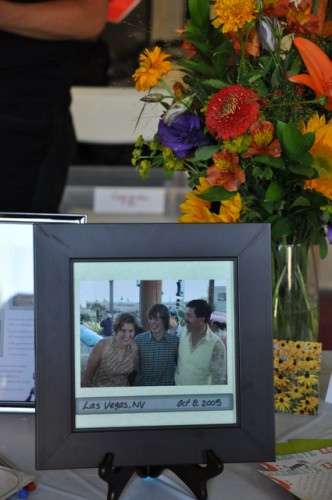

The unofficially official memorial page for Ken Morton, AKA Dread Pirate Kermit.

Ways to Remember Ken:
- Order stickers or patches (or simply send a donation to Lisa and Sam) here.
- Sam, Ken's son, is in prison. Ken asked people to send postcards from around the world. Contact Ted for Sam's address.
- If you have a picture, story, or other memorabilia to contribute to this page, please contact Ted.
What happened?
On the final leg of the 3-day Utah 1088 rally, Ken was headed westbound on I-80 through Nebraska. The day was stormy—many tornadoes touched down nearby. His bike went into the grassy median (likely because of a wind gust from the north). The bike tumbled, causing Ken to be ejected from the bike, resulting in immediate death. This occurred at about 9 p.m. on June 25, 2011, just outside Kimball, Nebraska. Many people were watching Ken's SPOT Messenger map, and his lack of forward progress was noted by early the following morning. Ken's wife Lisa was notified of his death, and his friends began to hear about it by late in the day. Contrary to some rumors and news reports, Ken wasn't thrown into oncoming traffic, nor were the conditions such that the bike hydroplaned.Recommended reading and viewing

Unexpected Consequences - Jack Lewis on Ken Morton
There’s an old story about Chinese luck. It’s probably B.S., which is why it belongs in this blog… An aged farmer’s stallion kicked down his stall and ran off. The farmer’s neighbors commiserated. “Ah, bad luck!,” they said, but Li Chien only shrugged. “Good luck, bad luck,” he said. “Who can tell?” Shaking their heads ... read more


Dread Pirate Kermit/Ken Morton memorial toast from Ted Timmons on Vimeo.
Dread Pirate Kermit/Ken Morton memorial revoff from Ted Timmons on Vimeo.
Memorial pages and remembrances
- ADVrider
- ApriliaForum (28 posts)
- FJRForum
- ST-Owners (41 posts)
- Stromtrooper (8 posts)
- Utah 1088
- WetLeather
- Unexpected Consequences - Jack Lewis on Ken Morton
- Minor mentions: southwestrides twtex farkle.me
Memorial party reports
- Memorial program PDF from Cindy (aka Blondie)
- Official toast/speech video (youtube)
- Official revoff video (youtube)
- Memorial party pictures: Shasta Willson, Matt Watkins and Rusty Bachman
- Revoff videos on Youtube: Scott Elam, Brian Nobles, Matt Watkins, Dennis Weatherly, Shasta Willson
Memorial remote revoffs
3-day 1088 ride reports
This is the ride Ken was on when he died.- My Last Ride - Ken's final ride report, written by Matthew Watkins
- Brian Roberts
- Rusty Bachman
Ken's crash in the news
As stated above, the news isn't correct- he wasn't "thrown back into traffic".- Columbian: Wash. state man killed in crash in Neb. Panhandle, 26 June 2011 (local copy)
- Columbian: Vancouver biker killed in Nebraska accident identified, 27 June 2011 (local copy)
- Lincoln Journal Star: Washington man dies in Kimball County wreck, 26 June 2011 (local copy)
- Nebraska Rural Radio/KNEB: Motorcycle fatality On I-80 identified, 27 June 2011 (local copy)
Significant old posts from Ken
This section is lonely! If you know of something Ken wrote that is worth sharing, contact Ted!- A tale of Two 'Stroms - November 2010-June 2011, ADVRider build log about his DL1000 rally prep
- VStrom2/DL1000 introductory post - October 2010
- Babywing ride report - January 2003 (mentions Lisa as his girlfriend, talks about problems that plagued him during the 2003 Iron Butt Rally)